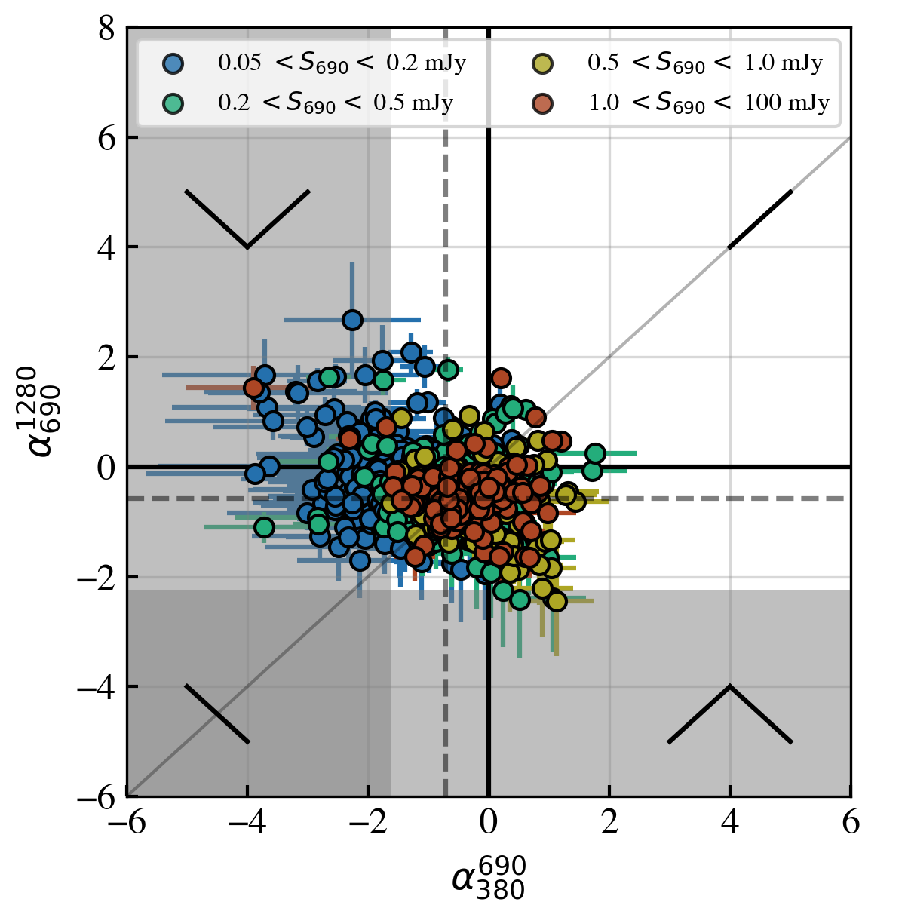

Dr. Sthabile Kolwa
The University of Johannesburg
skolwa [at] uj.ac.za
Hello! I am Sthabile, a lecturer at the Physics Department of the University of Johannesburg
I am also an early-career astronomer whos main research interests center around two overarching topics (i) active galactic nuclei (AGN) and (ii) source populations selected by deep extragalactic radio surveys. Currently, I am carrying out much of this research as a member of the MIGHTEE, superMIGHTEE (MIGHTEE + commensal uGMRT observations), and LOFAR collaborations. I am also involved in efforts for developing anomaly detection software pipelines for the Vera C. Rubin Observatory / LSST.
Before I slide into the details of my research, consider sending an abstract for a contributed talk or poster at the GA 2024: XXXII IAU General Assembly which will take place from the 6 - 15 August 2024 in Cape Town, South Africa. I will be co-chairing the "All-inclusive AGN" symposium with Dr. Sarah V. White.
Active Galactic Nuclei (AGN)
- Observational constraints on AGN feedback The tightly constrained black-hole and bulge mass relations as well as the black-hole mass velocity dispersion relationships in astrophysics demonstrate the inextricable link between the evolution of supermassive black-holes and their host galaxies. In studying the intricate ways in which active galactic nuclei, through jets and radiative winds, impact star-formation.
- The impact of large-scale (Mpc) structure on AGN activity While it is commonly accepted that AGN have a significant impact on the host galaxy's stars, dust and gas, the role of environment on AGN triggering is rather contentious. Results are biased by the wavelength-selectin of AGN and the distance-scale on which environment density is measured. My latest interest is in studying the influence of cosmological Mpc-scale structures on occurrence and recurrence of AGN.
- Quantifying systematic bias and selection-effects Radio continuum detections are incredibly useful in providing is with dust-unbiased observations of galaxies. Problems do arise, however, when we cross-identify radio continuum sources with multi-wavelength detections. Incompleteness of multi-wavelength source catalogues is a major biasing factor in studies of radio-selected galaxies. One of the focal points of my research is developing new and innovative ways to quantify and predict the impact of such biasing factors. In this, I aim to simulate radio source populations that will allow us to disentangle systematic effects from our observations.
- The evolution of radio-AGN and star-forming galaxies In deep extragalactic radio continuum surveys, we can select wide samples radio-active galactic nuclei and star-forming galaxy populations. Combining these sensitive radio detections with infrared, optical and X-ray detections, we can trace emission from the stars, dust, gas and central black-hole of galaxy. With such multiwavelength datasets, we can observationally constrain relationships between these components within the host galaxies and gauge how they vary with cosmic time to determine their evolution.
In a single-source study we published in Kolwa et al. 2019b, evidence for jet-gas interactions in HeII 1640Å emission lines is detected based on the VLT/MUSE observations. In this, we are tracing the cool, ionised gas component (T~10,000 K) within the extended halo of a z=2.92 high-power radio-AGN host galaxy.

In this source, we find evidence for a large expanding shell of metal-enriched gas (<60 kpc wide) causing foreground absorption in the Lyman-alpha, CIV and NV emission emission profiles.

In the past, I studied the kpc-scale environments of radio-AGN. In Kolwa et al. 2019a, we obtained a sample of VLA-detected radio sources in the SDSS Stripe 82 field and found significant and consistent over-densities within galaxy group scale environments of the detected radio sources up to z < 0.8.
The kpc-scale environments of radio-active galactic nuclei

Radio Source Populations
In current work, we are using MeerKAT/MIGHTEE L-band and uGMRT to constraint the physical mechanisms underlying radio emission in the faint microJansky radio source population.

In Kolwa et al. (2023), we obtain constraints and upper limits on molecular gas mass from neutral carbon line emission in seven high-redshift radio galaxies (HzRGs). These detections allowed us to determine their gas fractions and star-forming efficiencies.